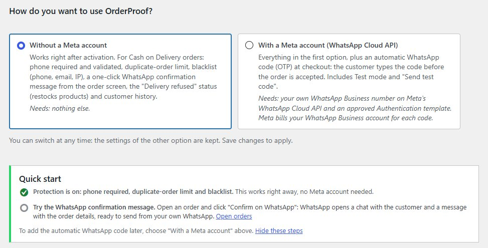
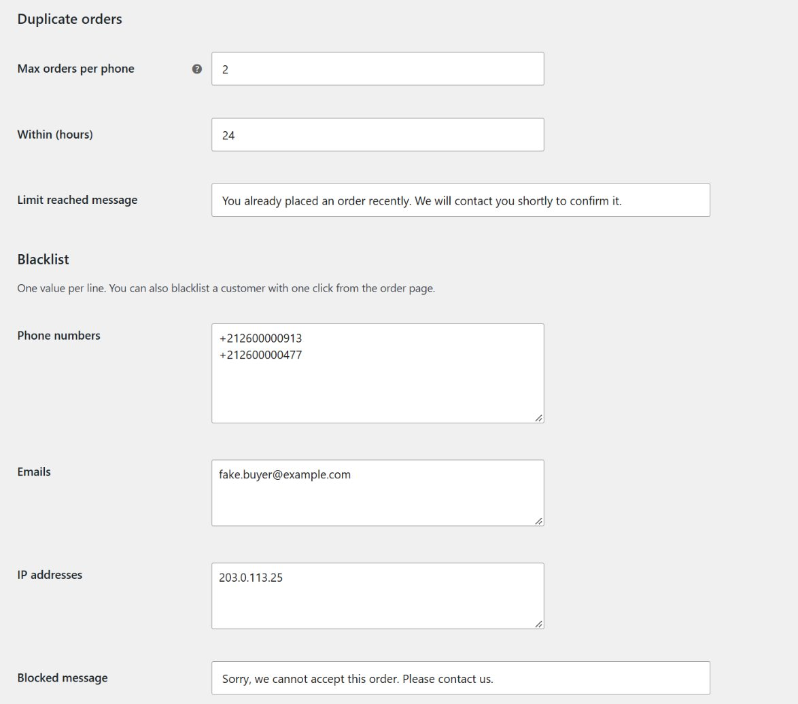
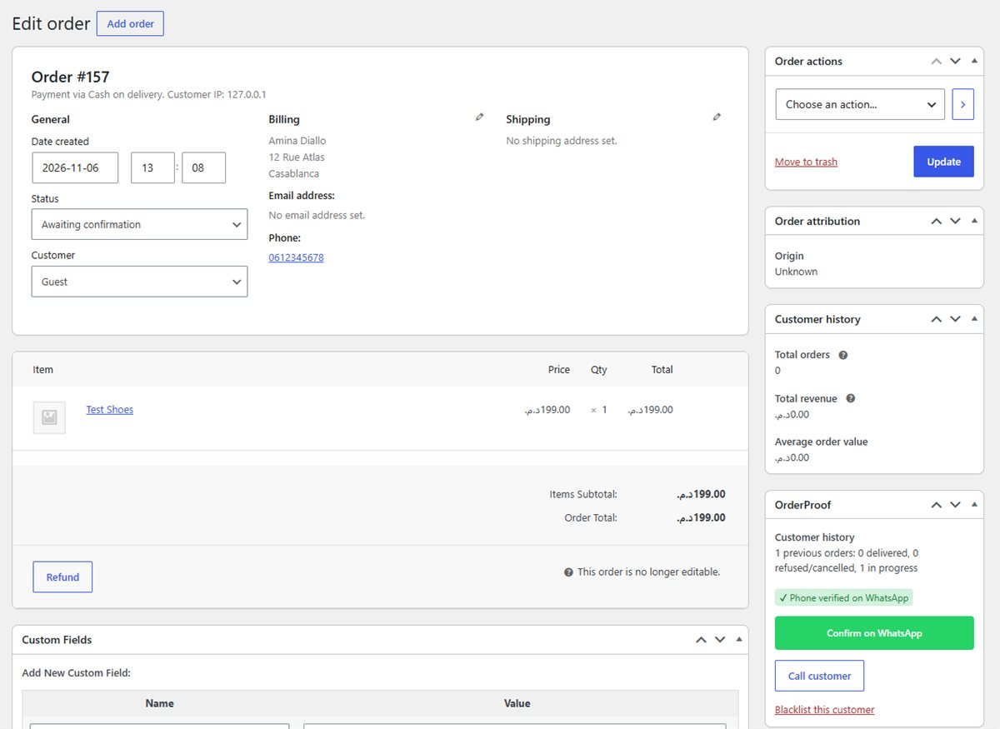
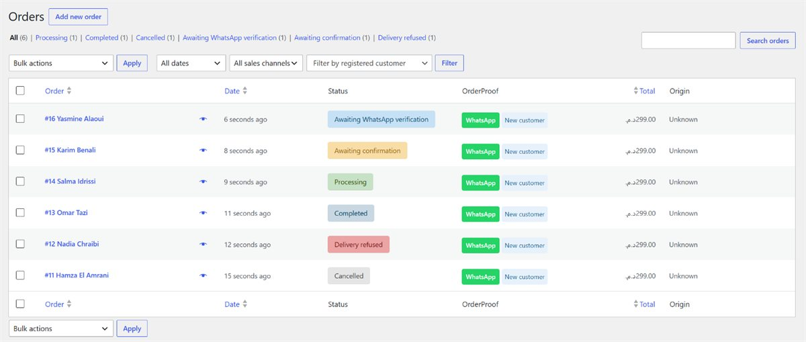
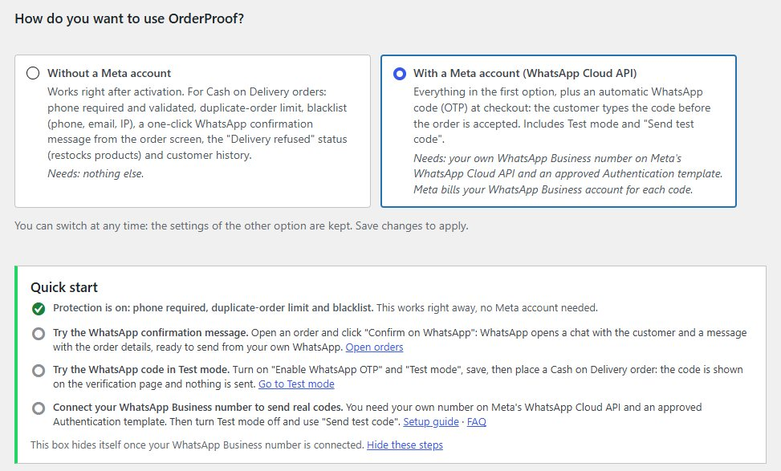
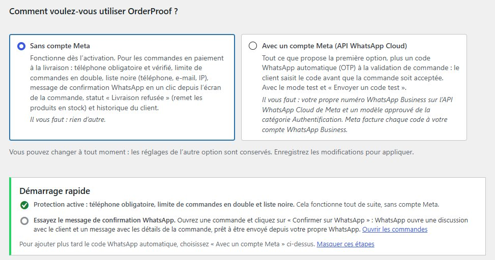
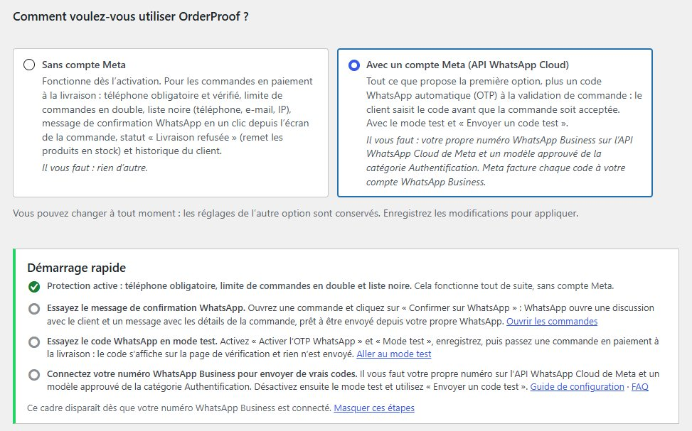
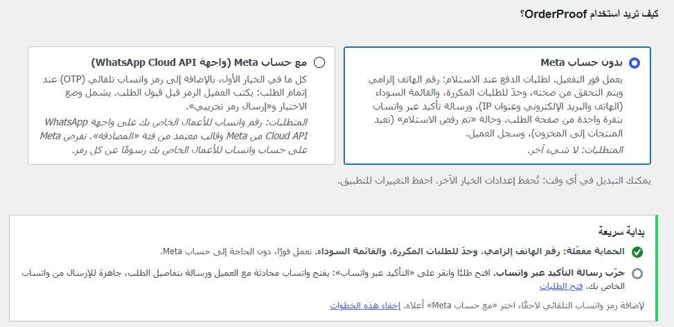
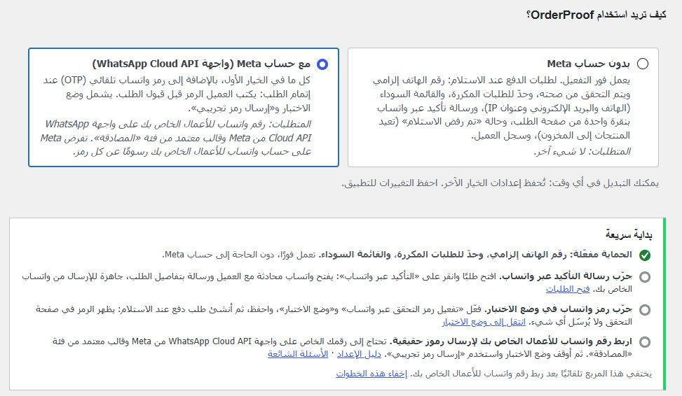

How to stop fake Cash on Delivery orders in WooCommerce
Fake COD orders cost you twice: the courier charges you to deliver and often again to return the parcel, and the stock sits in a van for days. There is no single switch that stops them. Below are the free steps in WooCommerce first, then what our plugin OrderProof adds.
First, know which kind of "fake order" you have. They need different fixes:
What you see
Likely cause
Main fix
Dozens of orders in minutes, random names and emails, often the same cheap product, often card payments
Bots or card testing
A CAPTCHA, a firewall, your payment gateway's fraud settings (step 1)
Real-looking COD orders that are refused at the door, or the phone never answers
People ordering without intent to pay, pranks, competitors
Phone checks, confirmation before shipping, blocking repeat refusers (steps 2 to 5, then OrderProof)
Free steps in WooCommerce (no extra plugin needed, except step 1)
1. Stop bots with a CAPTCHA
Add a CAPTCHA (for example Turnstile or reCAPTCHA) to your checkout. Several free plugins do this. Choose one that says it supports the Checkout block if your store uses it. A CAPTCHA, together with your payment gateway's own fraud settings, is also the usual answer to card-testing attacks on online card payments. Ask your host whether a firewall is active too.
2. Make the phone number required in the Checkout block
In the Checkout block, the phone field is optional by default. To change it in WooCommerce:
Go to Pages and open your Checkout page with Edit.
Select the Checkout block (or its Billing Address or Shipping Address block).
In Block settings, under Address Fields, turn Phone on and set it to Required.
Save.
If you use OrderProof (below), you can skip this step: its Require phone setting is on by default and makes the phone required in both the classic checkout and the Checkout block, whatever the Checkout block's own setting says.
3. Offer Cash on Delivery only where you can collect cash
In WooCommerce > Settings > Payments > Cash on delivery, the option Enable for shipping methods lets you offer COD only with the delivery methods (and so the areas) where your courier collects cash. Leave it empty to offer COD everywhere.
4. Confirm before you ship
COD orders arrive as Processing. Before you hand them to the courier, call or message the customer. Put orders you could not confirm on On hold so they don't ship by mistake.
5. Keep a list of customers who refused
Note the phone numbers of customers who refused a parcel, and check new orders against that list before shipping.
These steps cost nothing. Steps 4 and 5 take time on every order, and that is where a plugin helps.
What OrderProof adds (free plugin)
We are the developer of OrderProof (Digital Services SARL). It is free on WordPress.org and works in the classic checkout and the Checkout block.
Two ways to use it
At the top of WooCommerce > Settings > OrderProof, OrderProof asks "How do you want to use OrderProof?":
Without a Meta account (the default). Works right after activation, nothing else to set up.
With a Meta account (WhatsApp Cloud API). Everything in the first option, plus an automatic WhatsApp code (OTP) at checkout. See "When you are ready" below.
You can switch at any time; the settings of the other option are kept. A Quick start box under the choice lists the next steps for your option and ticks them as you go (Hide these steps hides it).

What works without a Meta account
All of these were tested with no Meta account, in the classic checkout and the Checkout block:
Required, validated phone numbers.Require phone is on by default. Numbers are read with the calling code of the customer's billing country, so a local number is converted to its international form. An invalid number is refused before the order is created.
Duplicate order limit. Set Max orders per phone and Within (hours). For example, with 2 orders in 24 hours, a third order from the same phone is refused, even if the customer types the number in international format (+212…) instead of the local one.
Blacklist. Block phone numbers, emails and IP addresses in the settings, or click Blacklist this customer on the order screen.

WhatsApp confirmation in one click. On the order screen, Confirm on WhatsApp (and the WhatsApp button in the orders list) opens a chat with the customer and a message with the order details (order number, items, total), ready to send from your own WhatsApp. An Awaiting confirmation status lets you track orders while you wait for the reply.
"Delivery refused" status. Mark a refused parcel; the products go back into stock.
Customer history. The order screen shows how many past orders were delivered and how many were refused or cancelled, and the orders list shows a badge for each customer (for example "New customer"), before you ship.


By default these rules apply to COD orders. Untick Only Cash on Delivery orders to apply the phone rules, limits and blacklist to every payment method.
When you are ready: WhatsApp OTP (with a Meta account)
Choose With a Meta account (WhatsApp Cloud API) and turn on Enable WhatsApp OTP. The customer then receives a 6-digit code on WhatsApp and types it to confirm the order. Until then the order holds no stock and you get no "New order" email. Orders never verified are cancelled automatically after the number of hours you choose (2 by default).
What it needs: your own WhatsApp Business number on Meta's WhatsApp Cloud API, and an approved message template of the Authentication category. This setup is done in your Meta account and can take time. Meta bills your WhatsApp Business account for each authentication message (prices depend on the customer's country, see Meta's pricing page). OrderProof charges nothing per message. Test mode lets you try the whole flow before you connect WhatsApp (the code is shown on the verification page and nothing is sent), and Send test code checks your setup.

What OrderProof does not do
It is not a CAPTCHA. It does not stop bots from reaching your checkout. Use step 1 for that.
It does not stop card testing on online payment gateways. Use step 1 and your gateway's own fraud settings.
Bots that change name, email, IP and phone on every order can get past a blacklist and a duplicate limit. The WhatsApp code helps with COD orders because a fake number cannot confirm, but only once your Meta setup is done.
We do not publish a reduction figure. Results depend on your store and your customers.
Quick checklist
CAPTCHA on checkout
Phone required (Checkout block setting, or OrderProof's "Require phone")
COD offered only where you can collect cash
Every COD order confirmed before shipping
Repeat refusers blocked
Optional: WhatsApp OTP once your Meta setup is ready
Stopper les fausses commandes en paiement à la livraison sur WooCommerce
Une fausse commande en paiement à la livraison coûte deux fois : le transporteur facture l'aller, souvent aussi le retour, et le stock reste bloqué plusieurs jours. Aucun réglage unique ne règle le problème. Voici d'abord les étapes gratuites dans WooCommerce, puis ce qu'ajoute notre extension OrderProof.
D'abord, identifiez le type de « fausses commandes » que vous recevez. Les solutions ne sont pas les mêmes :
Ce que vous voyez
Cause probable
Solution principale
Des dizaines de commandes en quelques minutes, noms et e-mails au hasard, souvent le même petit produit, souvent payées par carte
Robots ou test de cartes volées
Un CAPTCHA, un pare-feu, les réglages anti-fraude de votre passerelle de paiement (étape 1)
Des commandes en paiement à la livraison crédibles, mais refusées à la livraison, ou un téléphone qui ne répond jamais
Commandes sans intention de payer, plaisantins, concurrents
Contrôle du téléphone, confirmation avant expédition, blocage des refus répétés (étapes 2 à 5, puis OrderProof)
Les étapes gratuites dans WooCommerce (sans extension, sauf l'étape 1)
1. Bloquer les robots avec un CAPTCHA
Ajoutez un CAPTCHA (par exemple Turnstile ou reCAPTCHA) à la page de commande. Plusieurs extensions gratuites le font : choisissez-en une compatible avec le bloc « Validation de commande » si votre boutique l'utilise. Un CAPTCHA, avec les réglages anti-fraude de votre passerelle de paiement, est aussi la réponse habituelle au test de cartes sur les paiements en ligne. Demandez aussi à votre hébergeur si un pare-feu est actif.
2. Rendre le téléphone obligatoire dans le bloc « Validation de commande »
Dans le bloc « Validation de commande », le téléphone est facultatif par défaut. Pour le changer dans WooCommerce :
Allez dans Pages, puis sur la page Checkout (elle peut s'appeler ainsi même en français), cliquez sur Modifier.
Sélectionnez le bloc « Validation de commande » (ou le bloc « Adresse de facturation » ou « Adresse de livraison »).
Dans les réglages du bloc, sous Champs d'adresse, activez Téléphone et choisissez Obligatoire.
Enregistrez.
Si vous utilisez OrderProof (plus bas), vous pouvez sauter cette étape : son réglage « Téléphone obligatoire » (Require phone) est activé par défaut et rend le téléphone obligatoire dans la page de commande classique comme dans le bloc « Validation de commande », quel que soit le réglage du bloc.
3. Proposer le paiement à la livraison seulement là où le cash est encaissé
Dans WooCommerce > Réglages > Paiements > Paiement à la livraison, l'option « Activer les mode d’expédition » permet de ne proposer le paiement à la livraison qu'avec les modes de livraison (donc les zones) où votre transporteur encaisse. Laissez-la vide pour le proposer partout.
4. Confirmer avant d'expédier
Les commandes en paiement à la livraison arrivent en En cours. Avant de les remettre au transporteur, appelez ou écrivez au client. Passez en En attente les commandes non confirmées, pour ne pas les expédier par erreur.
5. Tenir une liste des clients qui refusent
Notez les numéros des clients qui ont refusé un colis, et vérifiez chaque nouvelle commande avant de l'expédier.
Ces étapes ne coûtent rien. Les étapes 4 et 5 prennent du temps sur chaque commande : c'est là qu'une extension aide.
Ce qu'ajoute OrderProof (extension gratuite)
Nous sommes l'éditeur d'OrderProof (Digital Services SARL). L'extension est gratuite sur WordPress.org et fonctionne avec la page de commande classique comme avec le bloc « Validation de commande ».
Si votre administration affiche encore OrderProof en anglais, le libellé anglais est indiqué entre parenthèses.
Deux façons de l'utiliser
En haut de WooCommerce > Réglages > OrderProof, OrderProof vous demande « Comment voulez-vous utiliser OrderProof ? » :
« Sans compte Meta » (Without a Meta account), le choix par défaut. Fonctionne dès l'activation, rien d'autre à configurer.
« Avec un compte Meta (API WhatsApp Cloud) » (With a Meta account (WhatsApp Cloud API)). Tout ce que propose la première option, plus un code WhatsApp automatique (OTP) à la validation de commande. Voir « Quand vous serez prêt » plus bas.
Vous pouvez changer à tout moment : les réglages de l'autre option sont conservés. Un cadre « Démarrage rapide » (Quick start) sous ce choix liste les prochaines étapes pour votre option et les coche au fur et à mesure (« Masquer ces étapes » le masque).

Ce qui fonctionne sans compte Meta
Tout ceci a été testé sans compte Meta, avec la page de commande classique et le bloc « Validation de commande » :
Téléphone obligatoire et vérifié.« Téléphone obligatoire » (Require phone) est activé par défaut. Le numéro est lu avec l'indicatif du pays de facturation du client : un numéro local est converti au format international. Un numéro invalide est refusé avant la création de la commande.
Limite de commandes en double. Réglez « Commandes max. par téléphone » (Max orders per phone) et « Sur une période de (heures) » (Within (hours)). Par exemple, avec 2 commandes sur 24 heures, une troisième commande du même téléphone est refusée, même si le client saisit le numéro au format international (+212…) au lieu du format local.
Liste noire. Bloquez des numéros, des e-mails et des adresses IP dans les réglages, ou cliquez sur « Mettre ce client sur liste noire » (Blacklist this customer) dans l'écran de la commande.
Confirmation WhatsApp en un clic. Dans l'écran de la commande, « Confirmer sur WhatsApp » (Confirm on WhatsApp), ainsi que le bouton WhatsApp de la liste des commandes, ouvre une discussion avec le client et un message avec les détails de la commande (numéro, articles, total), prêt à être envoyé depuis votre propre WhatsApp. Le statut « En attente de confirmation » (Awaiting confirmation) vous aide à suivre les commandes en attendant la réponse.
Statut « Livraison refusée » (Delivery refused). Marquez un colis refusé : les produits reviennent en stock.
Historique du client. L'écran de la commande indique combien de commandes passées ont été livrées et combien ont été refusées ou annulées, et la liste des commandes affiche un badge pour chaque client (par exemple « Nouveau client »), avant l'expédition.
Par défaut, ces règles s'appliquent aux commandes en paiement à la livraison. Décochez « Uniquement les commandes en paiement à la livraison » (Only Cash on Delivery orders) pour appliquer les règles téléphone, les limites et la liste noire à tous les moyens de paiement.
Quand vous serez prêt : le code WhatsApp (OTP), avec un compte Meta
Choisissez « Avec un compte Meta (API WhatsApp Cloud) » et activez « Activer l’OTP WhatsApp » (Enable WhatsApp OTP). Le client reçoit alors un code à 6 chiffres sur WhatsApp et le saisit pour confirmer sa commande. En attendant, la commande ne bloque pas de stock et vous ne recevez pas l'e-mail « Nouvelle commande ». Les commandes jamais vérifiées sont annulées automatiquement après le nombre d'heures choisi (2 par défaut).
Ce qu'il faut : votre propre numéro WhatsApp Business sur l'API WhatsApp Cloud de Meta, et un modèle de message approuvé de la catégorie Authentification. Cette configuration se fait dans votre compte Meta et peut prendre du temps. Meta facture votre compte WhatsApp Business pour chaque message d'authentification (le prix dépend du pays du client, voir la page tarifs de Meta). OrderProof ne facture rien par message. Le « Mode test » (Test mode) permet d'essayer tout le parcours avant de connecter WhatsApp (le code s'affiche sur la page de vérification et rien n'est envoyé), et « Envoyer un code test » (Send test code) vérifie votre configuration.

Ce qu'OrderProof ne fait pas
Ce n'est pas un CAPTCHA. Il n'empêche pas les robots d'atteindre la page de commande : c'est le rôle de l'étape 1.
Il n'arrête pas le test de cartes sur les passerelles de paiement en ligne : étape 1 et réglages anti-fraude de votre passerelle.
Des robots qui changent de nom, d'e-mail, d'IP et de numéro à chaque commande peuvent passer une liste noire et une limite de doublons. Le code WhatsApp aide pour les commandes en paiement à la livraison, car un faux numéro ne peut pas confirmer, mais seulement une fois votre configuration Meta terminée.
Nous ne publions aucun chiffre de réduction : les résultats dépendent de votre boutique et de vos clients.
Récapitulatif
CAPTCHA sur la page de commande
Téléphone obligatoire (réglage du bloc « Validation de commande », ou « Téléphone obligatoire » d'OrderProof)
Paiement à la livraison proposé seulement là où il est encaissé
Chaque commande en paiement à la livraison confirmée avant l'expédition
Clients qui refusent à répétition bloqués
En option : code WhatsApp une fois votre configuration Meta prête
كيف توقف الطلبات الوهمية في الدفع عند الاستلام على ووكومرس
الطلب الوهمي في الدفع عند الاستلام يكلّفك مرتين: تدفع لشركة التوصيل ثمن الذهاب وغالبًا ثمن الإرجاع أيضًا، ويبقى المخزون محجوزًا لأيام. لا يوجد إعداد واحد يحلّ المشكلة. إليك أولًا الخطوات المجانية في ووكومرس، ثم ما تضيفه إضافتنا OrderProof.
أولًا، حدّد نوع "الطلبات الوهمية" التي تصلك، لأن الحلّ يختلف:
طلبات دفع عند الاستلام تبدو حقيقية، لكن الزبون يرفض الطرد أو لا يردّ على الهاتف
طلبات بلا نية للشراء، مزاح، منافسون
التحقق من الهاتف، التأكيد قبل الشحن، حظر من يرفض مرارًا (الخطوات 2 إلى 5، ثم OrderProof)
خطوات مجانية في ووكومرس (بدون إضافة، ما عدا الخطوة 1)
1. أوقف الروبوتات بكابتشا
أضف كابتشا (مثل Turnstile أو reCAPTCHA) إلى صفحة إتمام الطلب. توجد عدة إضافات مجانية لذلك؛ اختر واحدة تدعم كتلة «إتمام الطلب» إذا كان متجرك يستعملها. والكابتشا، مع إعدادات مكافحة الاحتيال في بوابة الدفع، هي أيضًا الحلّ المعتاد ضد تجربة البطاقات في الدفع الإلكتروني. واسأل شركة الاستضافة هل يوجد جدار حماية مفعّل.
2. اجعل رقم الهاتف إلزاميًا في كتلة «إتمام الطلب»
في كتلة «إتمام الطلب»، حقل الهاتف اختياري افتراضيًا. لتغييره في ووكومرس:
ادخل إلى صفحات، ثم صفحة Checkout (قد يبقى اسمها هكذا حتى بالعربية)، واضغط تحرير.
اختر كتلة «إتمام الطلب» (أو كتلة «عنوان الفوترة» أو «عنوان الشحن»).
في إعدادات الكتلة، ضمن حقول العنوان، فعّل الهاتف واجعله مطلوبة.
احفظ.
إذا كنت تستعمل OrderProof (أدناه)، يمكنك تخطّي هذه الخطوة: إعداد «رقم الهاتف إلزامي» (Require phone) مفعّل افتراضيًا، ويجعل الهاتف إلزاميًا في صفحة الدفع الكلاسيكية وفي كتلة «إتمام الطلب»، مهما كان إعداد الكتلة نفسها.
3. اعرض الدفع عند الاستلام فقط حيث يُحصَّل المبلغ
في WooCommerce > الإعدادات > المدفوعات > الدفع نقدًا عند الاستلام، يتيح خيار «التفعيل فقط لطرق الشحن» أن تعرض الدفع عند الاستلام فقط مع طرق الشحن (أي المناطق) التي تحصّل فيها شركة التوصيل المبلغ نقدًا. اتركه فارغًا لعرضه في كل مكان.
4. أكّد الطلب قبل الشحن
تصل طلبات الدفع عند الاستلام بحالة «قيد التنفيذ». قبل تسليمها لشركة التوصيل، اتصل بالزبون أو راسله. وضَع الطلبات التي لم تتأكد منها في حالة «قيد الإنتظار» حتى لا تُشحن بالخطأ.
5. احتفظ بقائمة الزبائن الذين رفضوا الاستلام
سجّل أرقام من رفضوا طردًا، وراجع كل طلب جديد على هذه القائمة قبل الشحن.
هذه الخطوات لا تكلّف شيئًا، لكن الخطوتين 4 و5 تأخذان وقتًا مع كل طلب، وهنا تفيد الإضافة.
ما تضيفه OrderProof (إضافة مجانية)
نحن مطوّرو إضافة OrderProof (شركة Digital Services SARL). الإضافة مجانية على WordPress.org، وتعمل في صفحة الدفع الكلاسيكية وفي كتلة «إتمام الطلب».
إذا كانت لوحة التحكم ما زالت تعرض OrderProof بالإنجليزية، فالاسم الإنجليزي مكتوب بين قوسين.
طريقتان للاستعمال
في أعلى WooCommerce > الإعدادات > OrderProof، تسألك الإضافة «كيف تريد استخدام OrderProof؟»:
«بدون حساب Meta» (Without a Meta account)، وهو الخيار الافتراضي. تعمل فور التفعيل، بلا أي إعداد آخر.
«مع حساب Meta (واجهة WhatsApp Cloud API)» (With a Meta account (WhatsApp Cloud API)). كل ما في الخيار الأول، بالإضافة إلى رمز واتساب تلقائي (OTP) عند إتمام الطلب. راجع «عندما تكون جاهزًا» أدناه.
يمكنك التبديل في أي وقت، وتُحفظ إعدادات الخيار الآخر. وتحت هذا الاختيار يعرض مربّع «بداية سريعة» (Quick start) الخطوات التالية لخيارك ويعلّمها كلما أنجزتها (ويخفيه رابط «إخفاء هذه الخطوات»).

ما يعمل بدون حساب Meta
جُرّبت كل هذه الميزات بدون حساب Meta، في صفحة الدفع الكلاسيكية وفي كتلة «إتمام الطلب»:
هاتف إلزامي ومُتحقَّق منه. إعداد «رقم الهاتف إلزامي» (Require phone) مفعّل افتراضيًا. يُقرأ الرقم بمفتاح الاتصال الخاص ببلد الفوترة، فيُحوَّل الرقم المحلي إلى الصيغة الدولية، ويُرفض الرقم غير الصحيح قبل إنشاء الطلب.
حدّ للطلبات المكرّرة. اضبط «الحد الأقصى للطلبات لكل هاتف» (Max orders per phone) و«خلال (ساعات)» (Within (hours)). مثلًا، مع طلبين خلال 24 ساعة، يُرفض الطلب الثالث من الهاتف نفسه، حتى لو كتب الزبون الرقم بالصيغة الدولية (+212…) بدل الصيغة المحلية.
قائمة سوداء. احظر أرقام هواتف وعناوين بريد إلكتروني وعناوين IP من الإعدادات، أو اضغط «إضافة هذا العميل إلى القائمة السوداء» (Blacklist this customer) في شاشة الطلب.
تأكيد عبر واتساب بنقرة واحدة. في شاشة الطلب، يفتح زر «التأكيد عبر واتساب» (Confirm on WhatsApp)، وكذلك زر واتساب في قائمة الطلبات، محادثة مع الزبون ورسالة بتفاصيل الطلب (رقم الطلب، المنتجات، المبلغ)، جاهزة للإرسال من واتساب الخاص بك. وتساعدك حالة «بانتظار التأكيد» (Awaiting confirmation) على متابعة الطلبات ريثما يردّ الزبون.
حالة «تم رفض الاستلام» (Delivery refused). علّم الطرد المرفوض، فتعود المنتجات إلى المخزون.
سجل العميل. تعرض شاشة الطلب كم طلبًا سابقًا استُلم وكم طلبًا رُفض أو أُلغي، وتعرض قائمة الطلبات شارة لكل زبون (مثل «عميل جديد»)، قبل أن تشحن.
افتراضيًا تُطبَّق هذه القواعد على طلبات الدفع عند الاستلام. ألغِ تحديد «طلبات الدفع عند الاستلام فقط» (Only Cash on Delivery orders) لتطبيق قواعد الهاتف والحدود والقائمة السوداء على كل طرق الدفع.
عندما تكون جاهزًا: رمز التحقق عبر واتساب (OTP) مع حساب Meta
اختر «مع حساب Meta (واجهة WhatsApp Cloud API)» وفعّل «تفعيل رمز التحقق عبر واتساب» (Enable WhatsApp OTP). عندها يصل الزبون رمز من 6 أرقام على واتساب، فيكتبه لتأكيد الطلب. وإلى أن يؤكّد، لا يحجز الطلب أي مخزون ولا تصلك رسالة "طلب جديد". والطلبات التي لا تُؤكَّد تُلغى تلقائيًا بعد عدد الساعات الذي تختاره (ساعتان افتراضيًا).
ما تحتاجه: رقم واتساب للأعمال خاص بك على واجهة WhatsApp Cloud API من Meta، وقالب رسالة معتمد من فئة المصادقة (Authentication). يتمّ هذا الإعداد في حسابك على Meta وقد يأخذ وقتًا. تحاسب Meta حساب واتساب للأعمال الخاص بك على كل رسالة مصادقة (السعر حسب بلد الزبون، راجع صفحة أسعار Meta)، ولا تأخذ OrderProof أي رسوم على الرسائل. ويتيح «وضع الاختبار» (Test mode) تجربة المسار كاملًا قبل ربط واتساب (يظهر الرمز في صفحة التحقق ولا يُرسل شيء)، ويتحقق زر «إرسال رمز تجريبي» (Send test code) من إعدادك.

ما لا تفعله OrderProof
ليست كابتشا. لا تمنع الروبوتات من الوصول إلى صفحة إتمام الطلب؛ هذا دور الخطوة 1.
لا توقف تجربة البطاقات على بوابات الدفع الإلكتروني؛ استعمل الخطوة 1 وإعدادات مكافحة الاحتيال في بوابة الدفع.
الروبوتات التي تغيّر الاسم والبريد وعنوان IP ورقم الهاتف مع كل طلب قد تتجاوز القائمة السوداء وحدّ التكرار. رمز واتساب يساعد في طلبات الدفع عند الاستلام لأن الرقم الوهمي لا يستطيع التأكيد، لكن فقط بعد إتمام إعداد Meta.
لا ننشر أي نسبة انخفاض؛ النتائج تختلف حسب متجرك وزبائنك.
قائمة تحقق سريعة
كابتشا في صفحة إتمام الطلب
الهاتف إلزامي (إعداد كتلة «إتمام الطلب»، أو «رقم الهاتف إلزامي» في OrderProof)